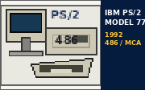
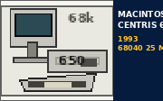
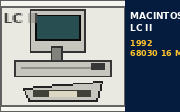

|
Macintosh | Windows | Amiga | C64 / 8-Bit | Atari | DOS | G15Control | Labs |
| HOME | PROJEKTE | PLATTFORMEN | DOWNLOADS | COMPATIBILITY | BROWSER TEST | ROADMAP | UEBER UNS |
| Deutsch | English |
| HARDWARE LAB - REAL TEST SYSTEMS |
|
Im Hardware Lab geht es um echte Maschinen, nicht nur Emulatoren. Diese vier klassischen Systeme stehen uns als reale Testplattformen zur Verfügung. Wir dokumentieren ihre historische Hardware, typische Konfigurationen, damalige Einsatzgebiete und unsere heutigen MultiEra-Tests. Warum das wichtig ist: Emulatoren sind ideal für schnelle Tests. Originalhardware zeigt uns aber, wie sich Browser, Netzwerke, Massenspeicher und Software unter den echten Grenzen ihrer Zeit verhalten. |
| UNSERE SYSTEME - HARDWARE LAB | ||||||||||||||
|


| IBM PS/2 MODEL 77 486 | |
 |
IBM - 1992 CPU: Intel 486SX/33 oder 486DX2/66 RAM: 8 MB ab Werk, bis 32 MB Professionelles 32-Bit-Micro-Channel-System mit XGA-2 und SCSI. Ideal für DOS, Windows und OS/2. |
| MACINTOSH CENTRIS 650 | |
 |
Apple - 1993 CPU: 68LC040 oder 68040, 25 MHz RAM: 4 oder 8 MB ab Werk, bis 132/136 MB Leistungsfähiger 68k-Mac für Business, Desktop Publishing, Grafik und Netzwerkbetrieb. |
| MACINTOSH LC II | |
 |
Apple - 1992 CPU: Motorola 68030, 16 MHz RAM: 4 MB ab Werk, bis 10 MB Kompakter Education- und Home-Mac im flachen Pizza-Box-Gehäuse. Perfekt für frühes System 7 und klassische Browser. |
| COMMODORE 64C | |
 |
Commodore - 1986 CPU: MOS 6510 / 8500, ca. 1 MHz RAM: 64 KB Der späte C64 im hellen Gehäuse: Spiele, BASIC, Demos, Lernsoftware und heute unser echtes 8-Bit-Webziel. |
|
WEITERE HARDWARE IM LAB Power Mac G5 sowie ein moderner Apple-Silicon-Mac dienen ebenfalls als Test- und Entwicklungsplattformen. Der Schwerpunkt dieser Legacy-Seite liegt jedoch auf den vier klassischen Systemen oben. |
|
Home |
Projekte |
Plattformen |
Downloads |
Compatibility |
Browser Test |
Roadmap |
Über uns
Impressum | Datenschutz | Kontakt MultiEra Labs - Software across generations. Optimiert für 640x480 oder 800x600. HTML 4.01 Transitional - No JavaScript required. English Version | Last updated: 11-Oct-2026 |